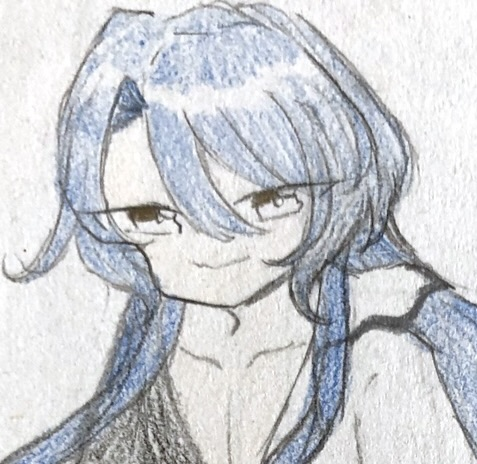
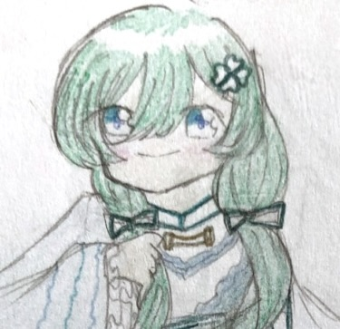
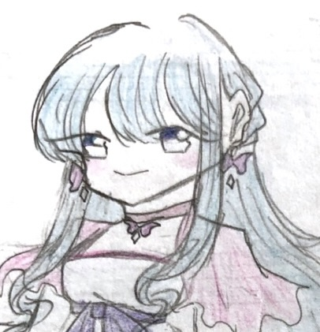

龍神種
doragodia

ロイド
ライドの兄。レムレス達の仲間。力がものすごく強く、よく一人で突っ走って大体力で解決する。仲間に頼るということをあまりしない。

リウ
龍神の末裔の妻。人のことをすぐ気にかけて自分は後回しにしがち。話したことのある人は皆友だと思っている。フラウのことを大親友だと思っている。

マリア
リウの娘。リウの弟が一人娘だから過保護に閉じ込めてしまっている。そんな状況をダメだと感じ裏から色々根回しして今の環境を打破しようと動いている。